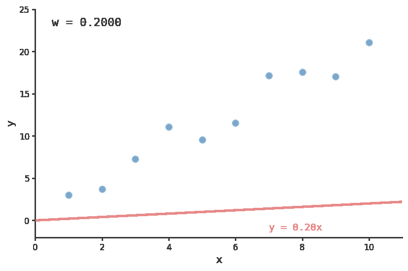
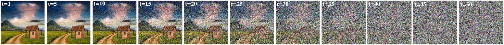
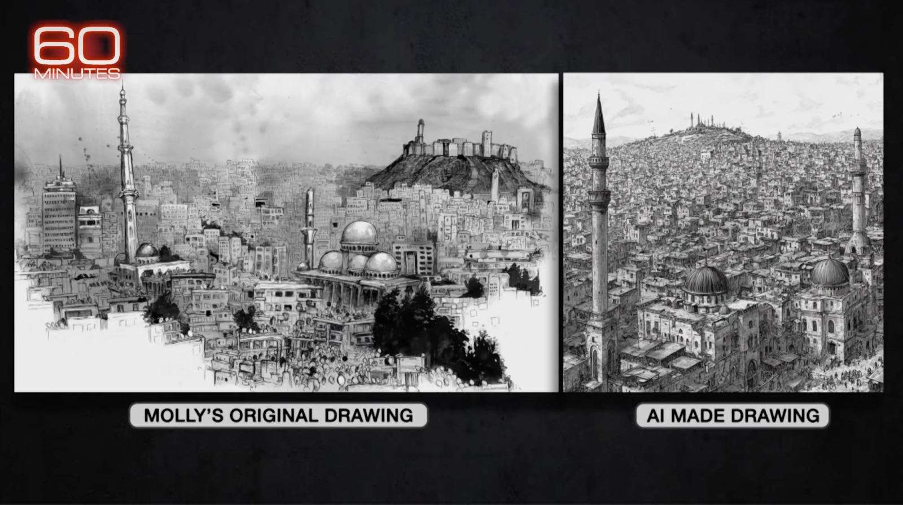

What the Models Learn
March 6, 2026
hi juice
Vish
A friend recently asked me how generative AI could create "art" if not by scraping (and training on) material that already exists. That is, actually, a rough description of what it does; it carries with it a notion that art is being "stolen." Taken to its logical conclusion, that notion has some pretty worrying implications—which I'll get to later—but I think it also glosses over much more interesting truths about the inner workings of these models.
First, I feel obligated to say that I am not a fan of most "art" produced by generative AI models. It can feel cheap; at least that is what I associate with writing which reaches for AI images as its visuals. What I often see feels bland and uninspired. And I have the same reflexive reaction to images I can tell are AI-generated as I did to those Ape NFTs a few years back.
But I believe this to be a symptom of how off-putting a technology's early adopters can be, not intrinsic to technology itself. There are, actually, a few clever ways this technology can be used and is already being used.[1] And many of the arguments put forth against this technology—though they merit serious consideration—strike me as remarkably confused.
In general, in spaces where generative models are criticized, there is a persistent incuriosity about how they actually work. People style themselves as an authority on how models work, endlessly repeating talking points. Here's one example:
To explain: "generative AI," takes data that was created by an actual human artist, jumbles it up, and spits out something that it claims is original. There's no human creativity involved, and it replaces real art with cheap copies. (It also uses up way too many resources.)
@ThomasonTown (x.com)
While the claim about resource use in that thread is also doubtful, I want to focus on the "jumbles it up" claim, because it is both very widespread and very wrong.
Let's Look at How Diffusion Models Actually Work
A model is, at its core, a mathematical function. Consider the simplest case—a scatterplot—with a line of best fit through it. Let's define the line as:
$$y = wx$$This is the model. The number $w$ is the weight. (In this case we have one; more advanced models have billions.) To train it, you would, for every point on the graph, measure how far it sits from the line, and nudge $w$ by that distance: $w \leftarrow w - \alpha \, d \, x$, where $\alpha$ is how big a step you take in the direction you're going. If we do this across every point, $w$ ends up with a value that fits the data best. Like this:

The line, through $w$, has learned the relationship between the points; in this case, that they go up and to the right. A diffusion model operates on the same principle. The difference is that training involves taking an image and burying it in a little noise, step by step, until all that remains is static:
$$q(x_t | x_{t-1}) = \mathcal{N}(x_t; \sqrt{1-\beta_t}\, x_{t-1},\ \beta_t \mathbf{I})$$
image getting progressively noisier at each step; courtesy of this blog.The model's job is to learn to guess, at each step, what noise was added:[3]
$$L = \mathbb{E}_{t, x_0, \epsilon}\left[|\epsilon - \epsilon_\theta(x_t, t)|^2\right]$$A model that memorized a single image would get punished for being unable to draw anything else, the same way a line that went through one point and none of the others would be punished for failing to predict the general trend. But in doing this across billions of images, we see something remarkable. The weights become good at guessing noise on every possible concept. To guess noise well on a painting of a sphere, the model has to understand how light falls on a sphere. To guess noise on cloth, it has to understand how cloth folds. To render a face turning from the light, it must learn how shadow commits to a feature. These models are not, contra Thomason, merely "jumbl[ing] up" images and spitting out similar results. They are smaller (Stable Diffusion is, for example, 16GB) than the terabytes of images they've been trained on yet can produce an infinite amount of visually coherent images.
Let's picture this visually. Imagine a flat grid where you have $x$ and $y$. Every point is a location defined by two numbers. Add a third axis, $z$, and now every point is defined by three numbers; picture this as a room. Now images have far more than three properties. Texture, light direction, subject matter, mood, and so on. And the model pictures one axis for each. You (the human reading this) cannot picture a space with a million axes (probably), but the math works out the same way.
For example, in language models, if you take the internal representation of king, subtract man, and add woman, you land very close to queen. The model has, without being told, learned gender as a direction you can move in. A similar thing happens in the "mind" of an image model. "Indoors" is a direction. "Lit from the left" is a direction. This is the latent space, and almost every point you can navigate to on it corresponds to something, usually something that wasn't in the training data.
To say that a model jumbles up images implies the images survive the process. They do not. All that remains in the weights is the geometry of this space. Much like how $w$ merely encodes the relationship between points and not the points themselves, what survives is the structure of relationships between concepts—not the images themselves.
You can see this directly. Here is what you get when you ask the model to step, incrementally, from the concept of "bookshelves in a library" to the concept of "bonfire":

Look at the second image. While it is still a library, the electric lights are replaced by candles. The model hasn't yet moved far enough towards "bonfire" to depict anything on fire, but it knows that a bonfire entails a fire and drew the image accordingly. By the third image, the books are stacked and waiting to be burnt. That midpoint is conceptually coherent because it is a geometric midpoint representing real concepts, not a jumbled assortment of images.
This Can't Be Used to Do Anything Impressive
One argument I used to hear a lot is that these models aren't doing anything impressive. Rather, the theory posits, they are simply stitching together facsimiles of what already exists. Given how prevalent this belief still is today, it's worth discussing. When diffusion models started to take off in 2022, they struggled with certain features. Hands, in particular. Artists routinely mocked the technology for being unable to do what any good human artist could, giving us gems like these:
artist: it's funny how ai cant draw hands
@lou_quorice (x.com)
techbro: lmao?? why, can y--
artist: yes.

There is this Substack piece which articulates this well. Though about language models, the point applies to diffusion models just as much. The full piece is worth a read—really, I can't recommend it enough—but relevant to us is this:
Social media reinforces this consensus, so that anyone who turns from the NYRB to Reddit or Bluesky, or the remaining left corners of X, will see the same thing. "Ppl don't know how ChatGPT works," one recent post said. "It doesn't 'know' things. It autocompletes sentences. It makes things up." The post has more than 70,000 likes.
As with many left ideas these days, the autocomplete view of AI is a popular adaptation of the views held by critical academics. People who follow AI closely will know this, though they may not know how deeply embedded in left discourse in particular these views have become.
[...]
That view takes next-token prediction, the technical process at the heart of large-language models, and makes it sound like a simple thing — so simple it's deflating. [...] But when that operation is done millions, and billions, and trillions of times, as it is when these models are trained? Suddenly the simple next token isn't so simple anymore.
Dan Kagan-Kans, Transformer
Much of the discussion surrounding AI models is stuck with impressions formed in 2023, delivered with great confidence and little contact with the technology itself. People who have not looked closely at a diffusion model in two years speak of its limitations as if they were authorities, with the same fervor as cultists insisting the rapture really did happen, but in secret. Except in this case, they deny that the technology has advanced when it's evident to anyone who's bothered to look that it very much has.
Theft and Copyright
Molly Crabapple, a New York-based artist and contributing editor for VICE, said as much in a recent 60 Minutes segment: "they stole billions and billions of images" in order to train their models. She claims AI was the "greatest art heist in history." As evidenced by this:

Crabapple's sketch of Aleppo, Syria, alongside an AI-generated image of the same.What you're looking at is a sketch she made of Aleppo, Syria, and an image generated by an AI prompted to sketch Aleppo. The argument appears to be that since they look similar the AI must have stolen her drawing. In reality, they look similar because they are both drawings of the same city. This is your mind on Copyright.
What the "theft" framing cannot do is identify the actual harm with any precision, because to do so would require showing that the model retained and reproduced specific expression rather than learning the statistical patterns beneath it. Everything humans have ever created is built, consciously or not, on what came before—the borrowings are too fine-grained and too numerous to trace. And in this case, what is borrowed are the concepts—since we know models deal in concepts—of buildings in the skyline of Aleppo. Does Crabapple think she owns the visage of Aleppo? Taken seriously, this theft framing leads to absurdity.
The obvious response is that humans are different from AI, that the absence of a human in the loop changes the moral calculus. That may be true. But it is not a copyright argument. I'll address it separately in a moment.
But what the "theft" framing does do, if it were to gain legal traction, is determine who can afford to train models at all. There are companies that can absorb the cost of legally prohibitive training data. They are large. They can afford to commission proprietary datasets from scratch. A world in which training data is hard to source and expensive to license is still a world in which large companies have access to generative models. Not to mention that this whole argument also relies on the same sleight of hand that companies make against emulating old games. They pretend the very indirect relationship downloading a ROM has with lost revenue is equivalent to direct theft.
There is also the question of what prohibition would actually achieve. American law reaches American companies. Nothing stops foreign competitors from training on publicly available data regardless, and exporting the resulting models at lowest cost, with whatever values their governments prefer. Locking American companies out of this space does not make the data disappear.
And in any case, copyright was meant to protect expression, not the statistical patterns beneath it. You cannot copyright how light falls on a building, or what a city skyline looks like, or the geometry of a street. The model learned those things. You should certainly not be able to copyright the skyline of a city.
The Human Soul
A separate objection holds that generative models lack a human soul. This is offered as though it settles the copyright question. What it misses is that it proves too much: if the absence of a soul makes copying impermissible, then the presence of one makes it permissible, which is not a moral principle anyone actually believes. (I think.) The soul, in this argument, is a placeholder for "human," and "human" is doing all the work toward the end of avoiding the harder question, which is whether training on publicly available data causes the specific harm claimed.
But as an aesthetic claim, the soul argument has real force. People seem to know this instinctively. There is something humans respond to in work that carries the trace of a specific person (or people) who made it. It is a little funny that Sam Altman—a guy who probably has more to gain from AI replacing human writers than almost anyone else—said this:
When I finish a great book, the first thing I go do is I want to know more about the writer. I want to know their life story. And I don't think I'll ever have that feeling about AI writing.
Sam Altman
I agree! The same feeling is why someone values a hand-drawn sketch of themselves over a photograph. Despite the photograph being more "accurate," the drawing is perceived as more meaningful, because of the time and effort it took. As photographs became cheaper, that dynamic did not go away; if anything it intensified.
A model has no vision. It cannot want anything. It can produce endless technically accomplished work, and most of it will be as forgettable as stock photography. That was always the ceiling for work made without a specific human perspective behind it. But in this, AI is not unique. The corporate slop market was already well served before AI, what with the corporate graphic aesthetic, templated illustration and stock photos. None of that really had a soul either, and humans were making it.
What About Jobs
Will this cost jobs (for people who do art for a living)? Yes, probably. However uncomfortable to sit with, it seems obviously true. I work in CS, and the companies building these models are already using AI to accelerate that work. The anxiety about displacement is not unique to artists; lawyers, analysts, and junior engineers are going to feel the same about their own fields, probably sooner than we expect.
But the argument rests on a premise that, I feel, has been overlooked: that the current arrangement—most people for most of our waking hours are doing work we didn't freely choose—is obviously the baseline worth defending. It probably shouldn't be. What becomes possible when the cost of doing things approaches zero is one of the genuinely open questions of this moment, and I've seen very little discourse seriously engage with it. Nobody knows yet what AI does to the economy in full, but the same technology is also making self-driving cars safer every year, and training robots that will eventually do a lot of dangerous work. We should always imagine a brighter future.[4]
Around 1840, when he first saw a photograph, the French painter Paul Delaroche reportedly said: "From today, painting is dead!" But painting did not die. As one of my Twitter mutuals put it:
Technology has driven art forwards. Photography gave way to the post-impressionists, who cast aside realism. Cubism broke apart form. Surrealists abandoned recognizable imagery altogether. The legacy of AI will have been to reveal which artists make slop and which ones don't.
@3xcalibaneur (x.com)